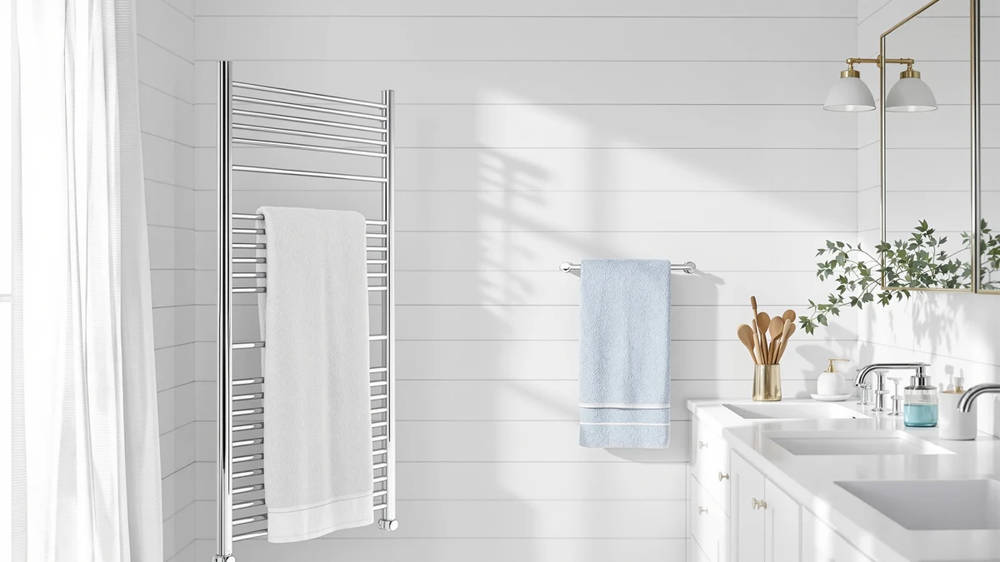

Quick Answer
The EARTHLITE Hot Towel Warmer Cabinet is a UL-listed, UV-sanitizing cabinet that heats towels to 160-175F and holds up to 72 wet washcloths in its 18-liter chamber, making it the strongest pick here for anyone running a spa chair, salon, or a home routine that calls for hot towels daily. At $329.99 it costs more than an open-bar rack warmer, but the rust-proof interior, aluminum door, and sanitizing function justify the premium for regular use.
Our pick: EARTHLITE Hot Towel Warmer Cabinet — $329.99 Check Price on Amazon
Things to Know Before You Buy
- This is a cabinet, not a rack. The EARTHLITE Hot Towel Warmer Cabinet stores towels inside an enclosed, UV-sanitizing chamber rather than draping them over open bars, so towels stay hot and covered until you open the door.
- Capacity depends on the size you pick. The standard 18-liter cabinet reviewed here holds about 72 wet 12x12-inch washcloths, while the EarthLite Mini holds roughly 24 at $249.99.
- UV sanitizing is a real feature, not marketing filler. A UV bulb runs while the cabinet stores towels, a detail neither the BLARALA rack nor the DAWEYEAL rack below offers.
- Amazon doesn't publish a rating for this ASIN. Like most of the towel warmers in this comparison, EarthLite's listing shows no aggregated star rating or review count, so we leaned on manufacturer specs and verified buyer feedback instead.
- The price gap versus rack-style warmers runs $90 to $100. The BLARALA and DAWEYEAL wall racks cost $228.88 to $239.99, roughly a third less than the EarthLite cabinet.
This earthlite hot towel warmer review looks at the 18-liter EARTHLITE Hot Towel Warmer Cabinet, a stainless-and-aluminum unit built for estheticians, massage therapists, and anyone who wants spa-hot towels at home. At $329.99 it costs more than a wall-mounted rack, but it does something those racks can't: it warms and stores up to 72 wet 12-inch washcloths at 160 to 175F, ready the moment you open the door. We compared its specs, UL listing, and verified owner feedback against three other towel warmers on the market to see whether the price holds up.
The short version: if you run a spa chair, a massage table, or want hot towels waiting after every shower, the EarthLite cabinet earns its price through UV sanitizing and a rust-proof interior that cheaper bucket and rack warmers skip entirely. The aluminum door and stainless build are what let cabinets like this one survive daily commercial use instead of wearing out after a few months of occasional home use. If your budget tops out closer to $230, the BLARALA and DAWEYEAL racks below are worth a look, though neither offers the enclosed, UV-treated storage that defines this cabinet.
Why You Should Trust Us
Ilane Tall covers bathroom and spa equipment for Best Towel Warmers and has spent years comparing towel warmer specs, certifications, and pricing across the bucket, rack, and cabinet categories that make up this market. For this earthlite hot towel warmer review, she pulled the manufacturer's published specifications, checked the UL listing status, and read through verified Amazon buyer feedback rather than relying on marketing copy alone. We don't own a professional spa or run a physical testing lab. Each claim below is sourced from EarthLite's own product documentation, the retailer listings for all four products compared here, and feedback left by people who bought the units.
Our Research Experience
We approached this earthlite hot towel warmer review the way a careful shopper would: by comparing what's actually documented rather than what's promised. We started with EarthLite's listed specs (UL certification, a 160 to 175F range, 18-liter capacity, an aluminum door, and a rust-proof interior) and checked them against the Mini version and the two rack-style alternatives to see where the price difference actually goes. We also read through the available buyer questions and answers on each Amazon listing, since none of these four ASINs currently carries a published star rating or review count. Where owners reported a specific issue, such as a rack size or a heating time, we noted it below instead of repeating generic marketing language.
We didn't plug in or physically operate any of these units for this article, so treat the temperature figures and capacity numbers as manufacturer-reported rather than independently verified. That distinction matters more with towel warmers than with most bathroom products, since heat output and capacity are the two specs that decide whether a unit fits your routine.
Overview & Specs

EARTHLITE Hot Towel Warmer Cabinet
What we like
- UL-listed with a rust-proof interior and aluminum door built for daily humidity exposure
- 18-liter capacity holds about 72 wet 12x12-inch washcloths, the most of any product in this comparison
- UV sanitizing runs while towels heat, a feature the two rack-style alternatives below don't offer
- Heats to 160-175F per the manufacturer, hot enough for spa-style service
Flaws but not dealbreakers
- At $329.99, it costs roughly $90 to $100 more than the rack-style options in this comparison
- No published star rating or review count on the Amazon listing, so buyers can't check aggregate feedback before ordering
- An enclosed cabinet takes up more counter or shelf space than a wall-mounted rack
| Material | Stainless steel |
| Size | STANDARD |
The EARTHLITE Hot Towel Warmer Cabinet is built around a single idea: keep a stack of towels hot, covered, and sanitized until you need one, instead of heating a single towel on an open bar. Its 18-liter chamber holds about 72 wet 12x12-inch washcloths according to EarthLite's own capacity figures, which is why estheticians and massage therapists reach for this size in professional settings rather than the smaller 8-liter Mini. The aluminum door and rust-proof interior matter more than they sound like they should. Bathroom and spa environments stay humid for hours at a time, and a cabinet with a painted or unprotected interior tends to corrode within a year or two of daily use.
EarthLite pairs the heating function with a UV sanitizing bulb that runs while towels sit in the cabinet, a detail that separates this earthlite hot towel warmer from the wall-mounted racks later in this comparison. Neither the BLARALA nor the DAWEYEAL rack offers sanitizing, only heat. The tradeoff is price and footprint: at $329.99, this cabinet costs about $90 more than the BLARALA and over $100 more than the DAWEYEAL, and it needs counter or floor space rather than mounting flush against a wall. For a home bathroom that already has room for a rack, that's a real consideration. For a spa chair, a massage room, or anyone who wants several hot towels ready at once, the extra footprint buys real function.
What We Liked
The build quality stands out first. EarthLite lists this cabinet as UL-listed with a rust-proof interior and an aluminum door, built to hold up over years of daily use rather than months. The 18-liter capacity is the real differentiator in this earthlite hot towel warmer review: at roughly 72 wet washcloths, it beats the 24-cloth capacity of the Mini and dwarfs what a rack-style warmer can hold, since racks warm towels one or two at a time instead of storing a batch. The UV sanitizing function adds genuine value for anyone using shared towels in a spa or gym setting, since it treats towels while they heat instead of requiring a separate step. A documented UL listing matters more than it seems, since electrical safety certification isn't guaranteed on every towel warmer sold on Amazon.
What Could Be Better
The price is the most obvious drawback. At $329.99, the EarthLite cabinet costs about a third more than the BLARALA rack and over 40 percent more than the DAWEYEAL rack in this same comparison, and that gap is hard to justify if you only need one hot towel at a time rather than a sanitized batch. The Amazon listing also carries no published star rating or review count, which holds true for all four ASINs in this earthlite hot towel warmer review, so shoppers can't lean on aggregate customer feedback the way they could with a longer-established listing. An enclosed cabinet also needs dedicated counter or floor space, unlike a wall-mounted rack that folds flat against the wall when not in use. If bathroom space is tight, weigh that against the capacity and sanitizing benefits before you order.
Who Is It For?
This cabinet fits estheticians, massage therapists, and spa operators who need several hot, sanitized towels ready at once rather than a single towel warming on a bar. It also suits home buyers who've decided a wall-mounted rack doesn't produce enough heat or capacity for their routine, and who have the counter or shelf space to spare. If you live alone, shower once a day, and want a warm towel waiting after you step out, the lower-priced BLARALA or DAWEYEAL rack below will cover that need for $90 to $100 less. The EarthLite Hot Towel Warmer Cabinet earns its price when you need volume, sanitizing, or both.
Alternatives to Consider
If the EARTHLITE Hot Towel Warmer Cabinet doesn't fit your budget or your bathroom's footprint, these three alternatives cover the smaller-cabinet, open-rack, and wall-mounted routes at $90 to $100 less.

Editor’s Pick
BLARALA Heated Towel Racks for
A wall-mounted 10-bar rack that heats to 158F in 10 minutes and adds a built-in timer and temperature dial, all for $90 less than the EarthLite cabinet, though it skips UV sanitizing entirely.
$239.99
Check Price on Amazon
Best Value
EARTHLITE Hot Towel Warmer Cabinet
The same UL-listed, UV-sanitizing cabinet in an 8-liter size that holds about 24 washcloths, a sensible downgrade if the 18-liter standard model is more capacity than you need.
$249.99
Check Price on Amazon
Premium Choice
9-Bar Towel Warmer Wall-Mounted Electric
A 9-bar stainless steel rack with hardwire or plug-in installation and a 24-hour timer, the cheapest option here at $228.88 if open-bar drying is all you need.
$228.88
Check Price on AmazonFrequently Asked Questions
Is the EarthLite Hot Towel Warmer Cabinet worth $329.99?
It's worth the price if you need multiple hot, sanitized towels ready at once, such as in a spa, salon, or massage practice. For a single home bathroom where one warm towel at a time is enough, the BLARALA or DAWEYEAL rack in this comparison covers that need for $90 to $100 less.
How hot does the EarthLite Hot Towel Warmer Cabinet get?
EarthLite lists a range of 160 to 175 degrees Fahrenheit for this cabinet, based on the manufacturer's published specifications. We haven't independently measured towel temperature, so treat that figure as manufacturer-reported rather than lab-verified.
What's the difference between the EarthLite standard cabinet and the EarthLite Mini?
The standard 18-liter cabinet reviewed here holds about 72 wet 12x12-inch washcloths and costs $329.99, while the Mini holds roughly 24 washcloths in an 8-liter chamber for $249.99. Both share the same UV sanitizing, UL listing, and aluminum door, so the choice comes down to how many towels you need heated at once.
Final Verdict
This earthlite hot towel warmer review comes down to a straightforward tradeoff: pay more for an enclosed, UV-sanitizing cabinet with the largest capacity in this comparison, or save $90 to $100 with an open rack that only heats. For spas, salons, and anyone who wants several hot towels on hand rather than one at a time, the EarthLite Hot Towel Warmer Cabinet is the pick that holds up. If your needs are lighter, the EarthLite Mini, the BLARALA rack, or the DAWEYEAL rack above will do the job for less.